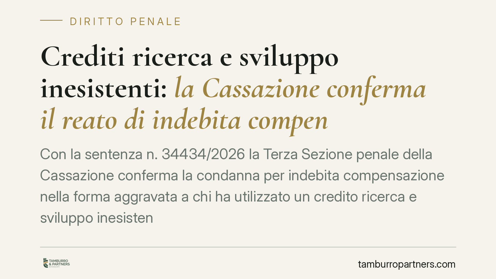

Crediti ricerca e sviluppo inesistenti: la Cassazione conferma il reato di indebita compensazione
Con la sentenza n. 34434/2026 la Terza Sezione penale della Cassazione conferma la condanna per indebita compensazione nella forma aggravata a chi ha utilizzato un credito ricerca e sviluppo inesistente. La pronuncia fissa criteri concreti per distinguere il credito legittimo da quello fittizio e nega valore scriminante al riversamento solo parziale delle somme.

Il caso
La vicenda riguarda l'utilizzo in compensazione di un credito d'imposta per attività di ricerca e sviluppo che, secondo le verifiche della Guardia di Finanza, non trovava riscontro in reali attività innovative. Le mansioni valorizzate come "ricerca" corrispondevano, nei fatti, a compiti ordinari del personale — tra cui quelli di semplici autisti — privi di qualsiasi contenuto sperimentale o tecnologico.
L'amministratore di fatto della società ha portato in compensazione tali crediti, riducendo indebitamente i versamenti dovuti all'erario. La Cassazione ha confermato la responsabilità penale, respingendo la tesi difensiva secondo cui un parziale riversamento delle somme avrebbe escluso la punibilità.
Inquadramento normativo
La norma di riferimento è l'art. 10-quater del D.lgs. 74/2000, che punisce l'indebita compensazione. La disposizione distingue due ipotesi:
- credito non spettante (comma 1): il contribuente utilizza un credito che esiste ma non gli compete, ad esempio per errata applicazione dei presupposti;
- credito inesistente (comma 2): il credito manca del tutto di fondamento sostanziale. È la forma più grave, punita più severamente.
La soglia di rilevanza penale scatta quando l'importo compensato indebitamente supera i 50.000 euro annui. La distinzione tra le due ipotesi non è formale: incide sulla pena e sui termini di prescrizione.
La Corte ha precisato che il credito R&S è inesistente quando le attività dichiarate non presentano i requisiti di novità, rischio tecnico e superamento di un ostacolo scientifico o tecnologico richiesti dalla disciplina agevolativa. Se ciò che viene spacciato per ricerca è in realtà attività di routine, il credito non ha alcun aggancio con la realtà: non è "non spettante", è proprio inesistente.
Le implicazioni pratiche
La pronuncia interessa direttamente amministratori, imprenditori e professionisti che hanno maturato o utilizzato crediti R&S negli anni interessati dalla stagione degli incentivi. Tre profili meritano attenzione.
Primo: la qualificazione del credito come inesistente non dipende dall'esistenza formale di documentazione o perizie, ma dalla effettiva natura innovativa delle attività svolte. Documenti impeccabili non salvano un progetto privo di sostanza scientifica.
Secondo: risponde del reato anche l'amministratore di fatto, cioè chi gestisce concretamente la società pur senza cariche formali. La responsabilità penale segue il potere reale di decisione, non la carica sulla carta.
Terzo — e più insidioso: il riversamento parziale delle somme non esclude la punibilità. La Cassazione ha ribadito che solo l'integrale versamento del dovuto, entro i termini previsti dalla legge, può incidere sulla causa di non punibilità. Restituire una parte non basta.
Perché la distinzione conta davvero
Qualificare un credito come inesistente anziché non spettante comporta pene più alte e prescrizione più lunga. Per questo la linea difensiva spesso punta a far rientrare la contestazione nell'ipotesi meno grave. La sentenza mostra però che, quando manca il presupposto sostanziale dell'attività di ricerca, questa strada è preclusa: il credito è inesistente per definizione.
Cosa fare in concreto
- Verificate la sostanza dei progetti R&S già compensati: chiedete un riesame tecnico che confermi novità, rischio e contenuto sperimentale, non solo la presenza di documentazione.
- Ricostruite le mansioni effettive del personale valorizzato nei costi di ricerca: se le attività sono ordinarie, il rischio penale è concreto.
- Non affidatevi al riversamento parziale come strategia: valutate con un professionista i presupposti e i termini per un versamento integrale utile a incidere sulla punibilità.
- Mappate le posizioni di responsabilità, incluse quelle di chi ha gestito di fatto la società, per definire un quadro difensivo coerente.
- Agite prima della verifica, quando possibile: le opzioni difensive e di regolarizzazione si riducono drasticamente una volta avviato l'accertamento.
La materia dei crediti d'imposta per ricerca e sviluppo è oggetto di crescente attenzione da parte dell'Agenzia delle Entrate e della Guardia di Finanza. Un'analisi preventiva della propria posizione consente di valutare per tempo i margini di intervento.
---
Contributo informativo a cura di Tamburro & Partners - Avv. Giuseppe Tamburro. Non costituisce parere legale.
Ogni condominio ha una storia a sé.
Se gestisci un'amministrazione e vuoi un confronto su una specifica questione condominiale, scrivi allo studio. Ti rispondiamo entro un giorno lavorativo.